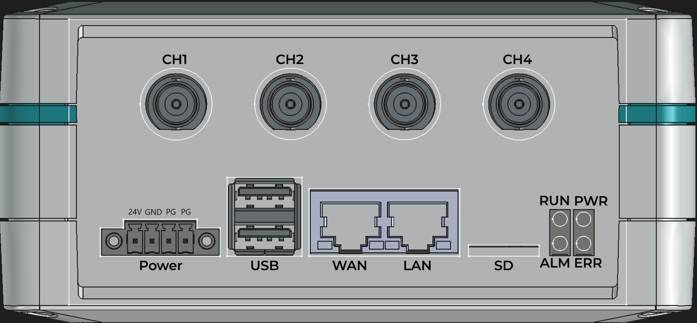

PRISM API Reference¶
PRISM — Precision Real-Time Instrumentation System for Monitoring
코드 위치¶
| 파일 | 설명 |
|---|---|
prismlib/include/prismlib.h |
C API 공개 헤더 — 전체 함수/상수 선언 |
prismlib/python/prismlib/prismlib_c.py |
Python API 공개 클래스 — ctypes 래퍼 |
prismlib/python/prismlib/constants.py |
Python 공통 상수 — ResultCode, ScanOptions, ScanStatus |
prismlib/examples/c/finite_scan.c |
C 유한 스캔 예제 |
prismlib/examples/c/continuous_scan.c |
C 연속 스캔 예제 |
prismlib/examples/python/finite_scan.py |
Python 유한 스캔 예제 |
prismlib/examples/python/continuous_scan.py |
Python 연속 스캔 예제 |
목차¶
1. 개요¶
PRISM은 USB 또는 이더넷으로 연결하여 사용하는 고정밀 진동·소음 측정 모듈입니다. 라이브러리는 C와 Python 두 가지로 제공되며, 동일한 기능을 제공합니다.
| 언어 | 헤더/패키지 | API 스타일 |
|---|---|---|
| C (GCC) | #include "prismlib.h" |
prismlib_t* 핸들 기반 함수 |
| Python 3 | from prismlib import prismlib |
prismlib() 클래스 메서드 |
다중 장치 지원: C API는
prismlib_t*핸들을 통해 여러 PRISM 장치를 동시에 제어할 수 있습니다. Python API는prismlib인스턴스 생성으로 동일하게 지원합니다.
연결: PRISM 장치를 USB 또는 이더넷 케이블로 연결한 후 open()을 호출하면 통신이 시작됩니다.
2. 하드웨어 사양¶

PRISM-C100은 4채널 24-bit ADC 기반 진동·음향 측정 모듈로, IEPE 전류원을 내장하여 압전형 가속도계/마이크를 직접 연결할 수 있습니다. Ethernet 인터페이스를 통해 최대 512 kSPS의 고속 데이터를 스트리밍합니다.
커넥터 및 인터페이스¶
| 레이블 | 타입 | 설명 |
|---|---|---|
| CH1 ~ CH4 | BNC | 아날로그 입력 채널. IEPE 전류원 내장 (채널별 On/Off). 입력 범위 ±5 V, 24-bit ADC. |
| Power | 4핀 단자대 | 24 V DC 전원 입력. 핀 배열: 24V · GND · PG(Protective Ground) · PG. |
| USB | USB-A × 2 | 호스트 USB 포트. |
| WAN | RJ-45 | 외부 네트워크 연결 포트. PC 또는 스위치/라우터에 연결. |
| LAN | RJ-45 | 내부 네트워크 포트 (192.168.0.10 초기 고정 IP 설정) |
| SD | MicroSD | 시스템 OS 및 로그 저장용 MicroSD 슬롯. |
| RUN / PWR / ALM / ERR | LED × 4 | 장치 상태 표시 LED (→ 2.1 참조). |
struct PrismlibDeviceInfo {
uint8_t NUM_AI_CHANNELS; // 아날로그 입력 채널 수 = 4
int32_t AI_MIN_CODE; // ADC 최솟값 = -8,388,608
int32_t AI_MAX_CODE; // ADC 최댓값 = 8,388,607
double AI_MIN_VOLTAGE; // 최소 입력 전압 = -5.0 V
double AI_MAX_VOLTAGE; // 최대 입력 전압 = +5.0 V - 1 LSB
double AI_MIN_RANGE; // 입력 범위 최솟값 = -5.0 V
double AI_MAX_RANGE; // 입력 범위 최댓값 = +5.0 V
};
| 항목 | 값 |
|---|---|
| 채널 수 | 4 (ch1 ~ ch4) |
| ADC 해상도 | 24-bit |
| 입력 전압 범위 | ±5 V |
| 기본 샘플링 속도 | 64 kSPS (채널당) |
| 최대 샘플링 속도 | 512 kSPS (채널당) |
| IEPE 지원 | 있음 (채널별 On/Off) |
| 연결 인터페이스 | USB / Ethernet |
2.1 상태 LED 핀 배치 (CM4)¶
| LED 이름 | GPIO 핀 | 제어 방식 | LedId 상수 |
open() 기본 상태 |
|---|---|---|---|---|
| PWR | GPIO 21 | gpiod | LedId.PWR |
ON |
| ERR | GPIO 20 | gpiod | LedId.ERR |
OFF |
| ALM | GPIO 16 | gpiod | LedId.ALARM |
OFF |
| RUN | Pi_LED_nActivity | /sys/class/leds/ACT/ |
— | 커널 제어 |
RUN: CM4의 Pi_LED_nActivity 핀에 연결된 LED입니다. 부팅 후 커널이 디스크 활동을 반영하며 자동 점멸합니다.
run_led_kernel(False)호출로 커널 제어를 해제한 후run_led_write()로 수동 제어할 수 있습니다.close()시 커널 제어를 해제한 상태라면 자동으로 원래 trigger가 복원됩니다.권한:
/sys/class/leds/ACT/trigger·/sys/class/leds/ACT/brightness쓰기는 root 권한 이 필요합니다.run_led_kernel()/run_led_write()사용 시sudo로 실행하거나 root 컨텍스트에서 호출해야 합니다.
3. 설치 및 시작하기¶
PRISM C100는 CM4를 내장하고 있으며 prismlib이 사전 설치되어 있어 별도의 설치 없이 연결하여 사용할 수 있습니다. CM4가 내장되지 않은 네트워크 타입(PRISM N 시리즈)은 사용하고자 하는 PC 등에 아래 설치 절차에 따라 prismlib을 설치한 후 사용할 수 있습니다.
3.1 연결 (PRISM C100 전용)¶
PRISM C100은 CM4가 내장되어 있어 LAN 포트를 통해 ssh로 접속할 수 있습니다. LAN 포트는 아래와 같이 IP 주소가 설정되어 있습니다. PC 등 연결하고자 하는 PC의 IP 주소를 동일한 대역(예: 192.168.0.11)으로 설정한 후 SSH로 접속할 수 있습니다.
| 항목 | 값 |
|---|---|
| IP 주소 | 192.168.0.10 |
| 서브넷 마스크 | 255.255.255.0 |
ssh admin@192.168.0.10
초기 SSH 접속 정보는 아래와 같습니다. 최초 사용 전 반드시 변경하십시오.
| 항목 | 초기값 |
|---|---|
| ID | admin |
| 패스워드 | 1234 |
prismlib은 홈 폴더에 prismlib 폴더에 설치되어 있습니다. 예제 실행
cd ~/prismlib/example/python/
python continuous_scan.py
3.2 설치¶
요구사항¶
| 항목 | 내용 |
|---|---|
| 플랫폼 | Linux (CM4 라즈비안에서 테스트됨) |
| 빌드 도구 | gcc, make, pthread |
| Python | 3.8 이상 |
| 의존 패키지 | numpy, gpiod, python3-gpiod (install.sh 자동 설치) |
다운로드¶
git clone https://github.com/rteslab/prismlib
cd prismlib/
설치¶
C 라이브러리, Python 라이브러리, 의존 패키지, GPIO 전원 제어를 모두 한 번에 설치합니다.
sudo ./install.sh
실행 결과:
Building PRISM C library...
Building examples...
Installing PRISM C library...
Installing numpy (required for ring buffer)...
Checking gpiod...
gpiod tools: ok
python3-gpiod: ok
Installing PRISM Python library...
Successfully installed prismlib-1.0.0
Cleaning build artifacts...
Installing GPIO13 USB power control (udev + systemd)...
udev rule : /etc/udev/rules.d/99-prism-usb-power.rules
systemd : prism-usb-power.service (started on hub detection)
PRISM library installed successfully.
C header : /usr/local/include/prismlib.h
C library : /usr/local/lib/libprismlib.so
C examples : examples/c/
Python : pip show prismlib
GPIO13 : AUTO (HIGH after USB hub recognized on each boot)
설치 확인¶
# C 라이브러리
ls /usr/local/include/prismlib.h /usr/local/lib/libprismlib.so
# Python 라이브러리
pip show prismlib
python3 -c "from prismlib import prismlib; print('OK')"
GPIO13 USB 전원 제어¶
install.sh는 USB 허브(USB2514B)가 OS에 인식되는 시점에 ADC_USB_EN(GPIO13) PIN을 자동으로 HIGH로 설정하는 udev rule을 등록합니다.
| 파일 | 설명 |
|---|---|
/etc/udev/rules.d/99-prism-usb-power.rules |
udev 규칙 (VID 0424 / PID 2514 감지 시 트리거) |
/etc/systemd/system/prism-usb-power.service |
gpioset -c 0 13=1 을 유지하는 systemd 서비스 |
동작 순서:
- CM4 부팅
- USB 허브(USB2514B) OS 인식 → udev 트리거
prism-usb-power.service시작 →gpioset -c 0 13=1실행 및 유지- GPIO13 HIGH → PRISM 장치 VBUS 인가
- PRISM 장치 부팅 및 TCP 서버 시작
prismlib_open()연결 성공
lsusb | grep 0424
# Bus 001 Device 002: ID 0424:2514 Microchip Technology, Inc. USB2514B/USB2517B
systemctl status prism-usb-power.service
gpioget -c 0 13
# "13"=active ← GPIO13 HIGH 확인
제거¶
cd ~/git_repo/prismlib/
sudo ./uninstall.sh
3.3 C 예제 실행¶
cd examples/c/
# 유한 스캔: ch1~ch4, 1024 샘플 수집 후 종료
./finite_scan 192.168.7.1 7777
# 연속 스캔: Ctrl-C 입력 시까지 계속 수집
./continuous_scan 192.168.7.1 7777
사용자 코드 컴파일¶
gcc my_app.c -lprismlib -lpthread -lm -o my_app
3.4 Python 예제 실행¶
cd examples/python/
# 유한 스캔: ch1~ch4, 1024 샘플 수집 후 종료
python3 finite_scan.py 192.168.7.1 7777
# 연속 스캔: Ctrl-C 입력 시까지 계속 수집
python3 continuous_scan.py 192.168.7.1 7777
기본 사용 예시¶
import time
from prismlib import prismlib, ScanOptions, ScanStatus
dev = prismlib("192.168.7.1", 7777)
dev.open()
try:
print(dev.fw_version()) # 예: "1.0.0"
print(dev.serial()) # 예: "PRISM-0001"
dev.sens_write(0, 100.0) # 감도: 100 mV/g
dev.iepe_write(0, True) # IEPE 전원 ON
time.sleep(2.0) # 바이어스 전류 안정화 대기 (500 ms ~ 2초)
dev.scan_start(0x01, 512, ScanOptions.DEFAULT)
data, status = dev.scan_read(512, timeout=5.0)
print(f"Read {len(data)} values")
finally:
dev.iepe_write(0, False)
dev.scan_cleanup()
dev.close()
다중 장치 동시 제어¶
각 prismlib 인스턴스는 독립된 TCP 연결을 유지하므로 장치 수에 제한 없이 동시 제어가 가능합니다.
from prismlib import prismlib, ScanOptions
dev1 = prismlib("192.168.1.10", 7777)
dev2 = prismlib("192.168.1.11", 7777)
dev1.open()
dev2.open()
dev1.scan_start(0x0F, 1024, ScanOptions.DEFAULT)
dev2.scan_start(0x03, 1024, ScanOptions.DEFAULT)
# ... 데이터 수집 후
dev1.scan_cleanup()
dev2.scan_cleanup()
dev1.close()
dev2.close()
4. 공통 상수 및 열거형¶
4.1 ResultCode¶
모든 C API 함수는 int 형으로 아래 코드를 반환합니다.
Python API는 오류 시 prismlibError 예외를 발생시킵니다.
enum ResultCode
{
RESULT_SUCCESS = 0, // 정상
RESULT_BAD_PARAMETER = -1, // 파라미터 오류
RESULT_BUSY = -2, // 디바이스 사용 중 (스캔 실행 중)
RESULT_TIMEOUT = -3, // 응답 타임아웃
RESULT_LOCK_TIMEOUT = -4, // 리소스 잠금 타임아웃
RESULT_RESOURCE_UNAVAIL = -6, // 필요 리소스 없음
RESULT_COMMS_FAILURE = -7, // 통신 실패
RESULT_UNDEFINED = -10 // 기타 오류
};
4.2 Scan Options¶
prismlib_scan_start() / prismlib.scan_start() 의 options 파라미터에 OR 조합하여 사용합니다.
#define OPTS_DEFAULT (0x0000) // 기본값 (스케일/캘리브레이션 적용, 유한 모드)
#define OPTS_NOSCALEDATA (0x0001) // 전압 변환 없이 ADC 원시 코드 반환
#define OPTS_NOCALIBRATEDATA (0x0002) // 캘리브레이션 계수 미적용
#define OPTS_CONTINUOUS (0x0010) // 명시적 중지 전까지 연속 스캔
#define OPTS_TCP_DATA (0x0020) // ADC 데이터를 UDP 대신 TCP 소켓으로 수신
데이터 전송 모드: UDP vs TCP¶
PRISM은 스캔 데이터를 UDP(기본값) 또는 TCP(OPTS_TCP_DATA) 중 하나의 방식으로 수신할 수 있습니다.
| 항목 | UDP (기본) | TCP (OPTS_TCP_DATA) |
|---|---|---|
| 전송 방식 | 비연결형 데이터그램 | 연결형 스트림 |
| 재전송 | 없음 | 있음 (자동 재전송) |
| 신뢰성 | 네트워크 상태에 따라 데이터 손실 가능 | 전송 순서와 완전성 보장 |
| 오버헤드 | 낮음 — 고속·저지연에 유리 | 높음 — 흐름 제어 및 재전송 오버헤드 발생 |
| 권장 상황 | 고속 연속 스트리밍 | 저속·저대역폭 환경에서 완전성이 중요한 경우 |
USB 연결 모델 제한: USB NCM 인터페이스로 연결된 장치는 UDP 모드만 지원합니다. TCP 모드(
OPTS_TCP_DATA)는 USB NCM의 흐름 제어 오버헤드로 인해 고속 스트리밍 시 심각한 데이터 손실이 발생하므로 사용하지 않아야 합니다.
4.3 Scan Status 플래그¶
prismlib_scan_read() / prismlib_scan_status() 의 status 출력에 OR 조합으로 반환됩니다.
#define STATUS_HW_OVERRUN (0x0001) // PRISM 장치 ADC 오버런
#define STATUS_BUFFER_OVERRUN (0x0002) // 호스트 내부 수신 버퍼 오버런
#define STATUS_RUNNING (0x0008) // 스캔 실행 중
두 오버런 플래그는 sticky입니다 — 한 번 세팅되면
scan_cleanup()호출 전까지 유지됩니다.
STATUS_HW_OVERRUN (0x0001) — 장치측 ADC 오버런¶
발생 위치: PRISM 장치 내부 (ADC 데이터 수집 모듈)
원인: ADC 데이터 수집 모듈이 데이터를 생성하는 속도보다 장치 펌웨어가 이를 소비하는 속도가 느릴 때 발생합니다. 정상 운용에서는 발생하지 않으며, 펌웨어 이상이나 내부 과부하 상황에서만 나타납니다.
대처: 발생 시 스캔을 중단(scan_stop()) 후 재시작합니다.
STATUS_BUFFER_OVERRUN (0x0002) — 호스트측 링 버퍼 오버런¶
발생 위치: 호스트(라이브러리) 내부 링 버퍼
구조:
PRISM 장치 호스트 라이브러리
────────── ────────────────────────────────────
ADC 수집 → UDP 전송 → [C 수신 스레드] → [링 버퍼] → scan_read()
↑ ↑
쓰기(C스레드) 읽기(사용자)
수신 스레드(C pthread)가 UDP 데이터를 링 버퍼에 쓰는 속도보다 사용자 코드가 scan_read()로 읽는 속도가 느리면 링 버퍼가 가득 차 오버런이 발생합니다.
링 버퍼 용량: scan_start() 의 samples_per_channel과 샘플링 속도 기반 기본값 중 큰 값으로 결정됩니다. 기본값은 약 2초 분량입니다.
| 샘플링 속도 | 기본 링 버퍼 용량 |
|---|---|
| 64 kS/s | 128,000 샘플/ch |
| 128 kS/s | 256,000 샘플/ch |
| 256 kS/s | 512,000 샘플/ch |
| 512 kS/s | 1,024,000 샘플/ch |
주요 원인 및 대처:
| 원인 | 대처 |
|---|---|
scan_read() 루프 내 처리가 느림 (Python 연산 과다) |
처리 로직 경량화, numpy 벡터 연산 활용 |
| Python GIL로 인한 처리 지연 | C 백엔드(libprismlib.so) 사용 |
| 링 버퍼가 너무 작음 | scan_start() samples_per_channel 값을 크게 설정 |
| 512 kS/s에서 Python 소비 속도 부족 | C 예제(continuous_scan_cnt.c) 또는 C 백엔드 사용 |
감지 및 처리 예시:
/* C */
while (status & STATUS_RUNNING) {
prismlib_scan_read(dev, &status, 1000, 1.0, buf, buf_size, &n_read);
if (status & STATUS_BUFFER_OVERRUN) {
fprintf(stderr, "Buffer overrun — consumer too slow\n");
break;
}
/* 데이터 처리 */
}
# Python
while status & ScanStatus.RUNNING:
data, status = prism.scan_read(1000, timeout=1.0)
if status & ScanStatus.BUFFER_OVERRUN:
print("Buffer overrun — consumer too slow")
break
4.4 장치 연결 상태¶
PRISM 장치는 연결 상태에 따라 아래 4개 상태를 유지합니다.
open() / scan_start() 등 라이브러리 함수가 상태 전환을 자동으로 처리하므로 사용자가 직접 관리할 필요는 없습니다.
| 상태 | 진입 조건 | 설명 |
|---|---|---|
| DISCONNECTED | 초기 / 연결 해제 | 연결 없음 |
| IDLE | open() 호출 후 |
명령 수신 가능 상태 |
| SCANNING | scan_start() 호출 후 |
데이터 수집 중 |
| SCAN_STOPPING | scan_stop() 호출 후 |
scan_cleanup() 대기 |
IDLE · SCANNING · SCAN_STOPPING 은 모두 장치가 연결된 Connected 상태입니다.
4.5 SampleRate¶
prismlib_sampleRate_write() / prismlib.sampleRate_write() 에 전달하는 샘플링 속도 열거형입니다.
/* C */
typedef enum {
PRISM_SR_64K = 0, /* 64 kS/s — 기본값 */
PRISM_SR_128K = 1, /* 128 kS/s */
PRISM_SR_170K = 2, /* 170 kS/s */
PRISM_SR_256K = 3, /* 256 kS/s */
PRISM_SR_512K = 4, /* 512 kS/s — 최대 */
} PrismSampleRate_e;
# Python
from prismlib import SampleRate
SampleRate.SR_64K # 0
SampleRate.SR_128K # 1
SampleRate.SR_170K # 2
SampleRate.SR_256K # 3
SampleRate.SR_512K # 4
4.6 LedId¶
led_write() / prismlib_led_write() 의 led_id 파라미터에 사용하는 LED 식별자 상수입니다.
/* C */
#define PRISM_LED_PWR 21 /* GPIO 21, PWR LED (open() 시 ON) */
#define PRISM_LED_ERR 20 /* GPIO 20, ERR LED (open() 시 OFF) */
#define PRISM_LED_ALARM 16 /* GPIO 16, ALM LED (open() 시 OFF) */
# Python
from prismlib import LedId
LedId.PWR # 21 — GPIO 21, PWR LED (open() 시 ON)
LedId.ERR # 20 — GPIO 20, ERR LED (open() 시 OFF)
LedId.ALARM # 16 — GPIO 16, ALM LED (open() 시 OFF)
5. C API¶
5.1 함수 목록¶
| 함수 | 설명 |
|---|---|
prismlib_open() |
디바이스 연결 열기 |
prismlib_is_open() |
연결 상태 확인 |
prismlib_close() |
디바이스 연결 닫기 |
prismlib_info() |
디바이스 상수 정보 조회 |
prismlib_fw_version() |
펌웨어 버전 읽기 |
prismlib_serial() |
시리얼 번호 읽기 |
prismlib_error_msg() |
ResultCode 설명 문자열 반환 |
prismlib_cal_date() |
캘리브레이션 날짜 읽기 |
prismlib_cal_read() |
캘리브레이션 계수 읽기 (메모리, 장치 통신 없음) |
prismlib_cal_write() |
캘리브레이션 계수 세션 내 변경 (로컬 전용) |
prismlib_iepe_read() |
IEPE 전원 설정 읽기 |
prismlib_iepe_write() |
IEPE 전원 설정 변경 |
prismlib_iepe_diag() |
IEPE 채널별 고장 진단 |
prismlib_sens_read() |
센서 감도 읽기 (메모리, 장치 통신 없음) |
prismlib_sens_write() |
센서 감도 세션 내 변경 (로컬 전용) |
prismlib_sampleRate_read() |
샘플링 속도 읽기 |
prismlib_sampleRate_write() |
샘플링 속도 설정 |
prismlib_scan_start() |
아날로그 입력 스캔 시작 |
prismlib_scan_stop() |
스캔 중지 |
prismlib_scan_read() |
스캔 데이터 읽기 |
prismlib_scan_status() |
스캔 상태 확인 |
prismlib_scan_cleanup() |
스캔 리소스 해제 |
prismlib_scan_ch_count() |
활성 채널 수 반환 |
prismlib_scan_buf_size() |
내부 버퍼 크기 반환 |
prismlib_led_write() |
상태 LED On/Off (PWR / ERR / ALM) |
prismlib_run_led_kernel() |
RUN LED 커널 제어 연결/해제 |
prismlib_run_led_write() |
RUN LED 수동 On/Off |
5.2 디바이스 관리¶
prismlib_open()¶
prismlib_t *prismlib_open(const char *ip, uint16_t port);
기능: 지정한 IP/포트의 디바이스에 연결하고 리소스를 초기화합니다. 감도 기본값은 1000 mV/unit으로 초기화됩니다.
연결 직후 아래 2단계 순서로 캘리브레이션 계수를 자동 설정합니다.
| 단계 | 동작 | 결과 |
|---|---|---|
| 1 | 내부 초기화 | slope = 1.0, offset = 0.0 |
| 2 | CMD_CAL_READ × 4채널 |
장치 Flash(공장 cal)에서 읽어 덮어씀 |
이후 cal_read()는 장치 Flash에서 읽어온 공장 캘리브레이션 값을 반환합니다.
사용자가 cal_write()를 호출하면 그 채널의 값이 메모리에서 변경되어 cal_read()에 즉시 반영됩니다.
cal 값은 세션(연결) 동안만 유효하며, close() 후 재연결하면 공장 값으로 복원됩니다.
| 파라미터 | 방향 | 타입 | 설명 |
|---|---|---|---|
ip |
in | const char* |
장치 IP 주소 문자열 (예: "192.168.7.1") |
port |
in | uint16_t |
TCP 포트 번호 (예: 7777) |
반환값: prismlib_t* 핸들 — 성공 시 유효한 포인터, 실패 시 NULL
/* 사용 예 */
prismlib_t *dev = prismlib_open("192.168.7.1", 7777);
if (dev == NULL) { /* 연결 실패 */ }
prismlib_is_open()¶
int prismlib_is_open(prismlib_t *dev);
기능: 디바이스 연결 상태를 확인합니다.
| 파라미터 | 방향 | 타입 | 설명 |
|---|---|---|---|
dev |
in | prismlib_t* |
디바이스 핸들 |
반환값: 1 = 연결됨, 0 = 연결 안 됨
prismlib_close()¶
int prismlib_close(prismlib_t *dev);
기능: 연결을 닫고 핸들 리소스를 해제합니다. 호출 후 dev 포인터는 무효가 됩니다.
| 파라미터 | 방향 | 타입 | 설명 |
|---|---|---|---|
dev |
in | prismlib_t* |
디바이스 핸들 |
반환값: ResultCode
prismlib_info()¶
struct PrismlibDeviceInfo *prismlib_info(prismlib_t *dev);
기능: 디바이스 하드웨어 상수 정보 포인터를 반환합니다.
| 파라미터 | 방향 | 타입 | 설명 |
|---|---|---|---|
dev |
in | prismlib_t* |
디바이스 핸들 |
반환값: struct PrismlibDeviceInfo* — 핸들 내부 구조체 포인터 (free 불필요)
prismlib_fw_version()¶
int prismlib_fw_version(prismlib_t *dev, char *buffer);
기능: 펌웨어 버전 문자열을 읽습니다 (예: "1.0.0").
| 파라미터 | 방향 | 타입 | 설명 |
|---|---|---|---|
dev |
in | prismlib_t* |
디바이스 핸들 |
buffer |
out | char* |
버전 문자열 수신 버퍼 (최소 16자 이상 할당) |
반환값: ResultCode
prismlib_serial()¶
int prismlib_serial(prismlib_t *dev, char *buffer);
기능: 시리얼 번호 문자열을 읽습니다.
| 파라미터 | 방향 | 타입 | 설명 |
|---|---|---|---|
dev |
in | prismlib_t* |
디바이스 핸들 |
buffer |
out | char* |
시리얼 번호 수신 버퍼 (최소 32자 이상 할당) |
반환값: ResultCode
prismlib_error_msg()¶
const char *prismlib_error_msg(int result);
기능: ResultCode에 대한 문자열 설명을 반환합니다. 핸들 불필요.
| 파라미터 | 방향 | 타입 | 설명 |
|---|---|---|---|
result |
in | int |
ResultCode 값 |
반환값: 에러 메시지 문자열 포인터 (const char*)
5.3 캘리브레이션¶
prismlib_cal_date()¶
int prismlib_cal_date(prismlib_t *dev, char *buffer);
기능: 캘리브레이션 날짜 문자열을 읽습니다 (형식: "YYYY-MM-DD").
| 파라미터 | 방향 | 타입 | 설명 |
|---|---|---|---|
dev |
in | prismlib_t* |
디바이스 핸들 |
buffer |
out | char* |
날짜 수신 버퍼 (최소 11자 이상 할당) |
반환값: ResultCode
prismlib_cal_read()¶
int prismlib_cal_read(prismlib_t *dev, uint8_t channel, double *slope, double *offset);
기능: 지정 채널의 현재 캘리브레이션 계수를 반환합니다. 장치 통신 없음 — 라이브러리 메모리에서 즉시 반환합니다.
prismlib_open()직후: 장치 Flash(공장 cal)에서 로드된 값prismlib_cal_write()호출 후: 사용자가 변경한 값
| 파라미터 | 방향 | 타입 | 설명 |
|---|---|---|---|
dev |
in | prismlib_t* |
디바이스 핸들 |
channel |
in | uint8_t |
채널 번호 (0 ~ 3) |
slope |
out | double* |
게인 보정 배율 |
offset |
out | double* |
제로 오프셋 보정값 |
반환값: ResultCode
prismlib_cal_write()¶
int prismlib_cal_write(prismlib_t *dev, uint8_t channel, double slope, double offset);
기능: 지정 채널의 캘리브레이션 계수를 세션 내에서 변경합니다.
로컬 전용 — 라이브러리 메모리만 업데이트합니다. close() 후 재연결하면 공장 값으로 복원됩니다.
- 호출 즉시
cal_read()에 반영됩니다. - 다음
scan_start()시점부터 스캔 변환에 적용됩니다. - 스캔 실행 중 호출하면
RESULT_BUSY를 반환합니다.scan_stop()+scan_cleanup()후 호출하십시오.
| 파라미터 | 방향 | 타입 | 설명 |
|---|---|---|---|
dev |
in | prismlib_t* |
디바이스 핸들 |
channel |
in | uint8_t |
채널 번호 (0 ~ 3) |
slope |
in | double |
게인 보정 배율. 공장 초기값 = 1.0 |
offset |
in | double |
제로 오프셋 보정값. 공장 초기값 = 0.0 |
반환값: ResultCode (RESULT_BUSY = 스캔 중)
/* 사용 예 */
prismlib_cal_write(dev, 0, 1.23456, 0.001); /* 채널 0 cal 변경 */
double s, o;
prismlib_cal_read(dev, 0, &s, &o); /* 즉시 반영 확인 */
/* 이후 scan_start() 시 변경된 cal 값이 적용됨 */
5.4 IEPE 설정¶
IEPE (Integrated Electronics Piezo-Electric): ICP 방식 압전 센서(가속도계, 음압 센서)에 필요한 일정 전류를 채널별로 공급하는 기능입니다.
prismlib_iepe_read()¶
int prismlib_iepe_read(prismlib_t *dev, uint8_t channel, uint8_t *config);
기능: 지정 채널의 IEPE 전원 설정을 읽습니다.
| 파라미터 | 방향 | 타입 | 설명 |
|---|---|---|---|
dev |
in | prismlib_t* |
디바이스 핸들 |
channel |
in | uint8_t |
채널 번호 (0 ~ 3) |
config |
out | uint8_t* |
0 = OFF, 1 = ON |
반환값: ResultCode
prismlib_iepe_write()¶
int prismlib_iepe_write(prismlib_t *dev, uint8_t channel, uint8_t config);
기능: 지정 채널의 IEPE 전원을 설정합니다. 스캔 실행 중 호출 시 RESULT_BUSY 반환.
| 파라미터 | 방향 | 타입 | 설명 |
|---|---|---|---|
dev |
in | prismlib_t* |
디바이스 핸들 |
channel |
in | uint8_t |
채널 번호 (0 ~ 3) |
config |
in | uint8_t |
0 = OFF, 1 = ON |
반환값: ResultCode (RESULT_BUSY = 스캔 중)
주의: IEPE 전원을 켠 직후에는 센서 바이어스 전류가 안정화되기까지 시간이 필요합니다.
config=1설정 후 500 ms ~ 2초 대기 한 뒤 스캔 및prismlib_iepe_diag()를 호출해야 정상적인 데이터와 진단 결과를 얻을 수 있습니다.
prismlib_iepe_diag()¶
int prismlib_iepe_diag(prismlib_t *dev, uint8_t *fault_mask);
기능: 전체 4채널의 IEPE 고장 여부를 비트마스크로 반환합니다.
각 비트가 1이면 해당 채널에 IEPE 회로 이상(센서 미연결 또는 단락)이 감지된 것입니다.
| 파라미터 | 방향 | 타입 | 설명 |
|---|---|---|---|
dev |
in | prismlib_t* |
디바이스 핸들 |
fault_mask |
out | uint8_t* |
비트마스크: bit0=ch1, bit1=ch2, bit2=ch3, bit3=ch4 (1=고장) |
반환값: ResultCode
IEPE를 켠 후 안정화 대기(500 ms ~ 2초) 없이 호출하면 고장으로 오진단될 수 있습니다.
uint8_t mask;
prismlib_iepe_diag(dev, &mask);
for (int ch = 0; ch < 4; ch++) {
if (mask & (1 << ch))
printf("ch%d: IEPE fault\n", ch + 1);
}
5.5 센서 감도¶
scan_read()샘플 변환 의사코드 (convert_sample()내부 동작):``` code = raw // raw int24 ADC code
if NOCALIBRATEDATA 플래그 없음: // 기본 동작 code = (raw - cal_offset) × cal_slope // cal 보정 적용
if NOSCALEDATA 플래그 있음: return code // ADC code 단위로 반환 (종료)
voltage = code / 8388607.0 × 5.0 // ADC code → 전압 (V) return voltage / (sensitivity / 1000.0) // 전압 → 물리량 ```
옵션 조합 반환값 단위 예 기본 ( OPTS_DEFAULT)물리량 V (sens=1000), g (sens=100) OPTS_NOSCALEDATAcalibrated ADC code ±8,388,607 범위 정수 OPTS_NOSCALEDATA \| OPTS_NOCALIBRATEDATAraw ADC code ±8,388,607 범위 정수 OPTS_NOCALIBRATEDATA단독cal 없이 물리량 변환 V
prismlib_sens_read()¶
int prismlib_sens_read(prismlib_t *dev, uint8_t channel, double *value);
기능: 지정 채널의 현재 감도 설정값을 반환합니다. 로컬 전용 — 라이브러리 메모리에서 즉시 반환합니다.
| 파라미터 | 방향 | 타입 | 설명 |
|---|---|---|---|
dev |
in | prismlib_t* |
디바이스 핸들 |
channel |
in | uint8_t |
채널 번호 (0 ~ 3) |
value |
out | double* |
감도 수신 (mV / 물리단위) |
반환값: ResultCode
prismlib_sens_write()¶
int prismlib_sens_write(prismlib_t *dev, uint8_t channel, double value);
기능: 지정 채널의 센서 감도를 세션 내에서 설정합니다. 센서 데이터시트의 감도 스펙(mV/물리단위)을 그대로 입력합니다.
로컬 전용 — 라이브러리 메모리에 저장됩니다. close() 후 재연결하면 기본값(1000 mV/unit)으로 복원됩니다.
- 다음
scan_start()시점부터 스캔 변환에 적용됩니다. - 스캔 실행 중 호출하면
RESULT_BUSY를 반환합니다.scan_stop()+scan_cleanup()후 호출하십시오.
| 파라미터 | 방향 | 타입 | 설명 |
|---|---|---|---|
dev |
in | prismlib_t* |
디바이스 핸들 |
channel |
in | uint8_t |
채널 번호 (0 ~ 3) |
value |
in | double |
센서 감도 (mV / 물리단위). 기본값 = 1000. 0 이하는 RESULT_BAD_PARAMETER |
반환값: ResultCode (RESULT_BUSY = 스캔 중, RESULT_BAD_PARAMETER = 0 이하 값)
설정 예시:
| 센서 | 데이터시트 감도 | 설정값 | 스캔 반환 단위 |
|---|---|---|---|
| 기본 (전압 그대로) | — | 1000 | V |
| 가속도계 | 100 mV/g | 100 | g |
| 진동 센서 | 10 V/g (= 10,000 mV/g) | 10000 | g |
| 음향 센서 | 50 mV/Pa | 50 | Pa |
| 압력 센서 | 200 mV/bar | 200 | bar |
/* 사용 예 */
prismlib_sens_write(dev, 0, 100.0); /* 채널 0: 100 mV/g 가속도계 */
prismlib_sens_write(dev, 1, 50.0); /* 채널 1: 50 mV/Pa 음향 센서 */
5.6 샘플링 속도 설정¶
prismlib_sampleRate_read()¶
int prismlib_sampleRate_read(prismlib_t *dev, PrismSampleRate_e *sample_rate);
기능: 현재 설정된 채널당 샘플링 속도를 읽습니다.
| 파라미터 | 방향 | 타입 | 설명 |
|---|---|---|---|
dev |
in | prismlib_t* |
디바이스 핸들 |
sample_rate |
out | PrismSampleRate_e* |
현재 샘플링 속도 |
반환값: ResultCode
prismlib_sampleRate_write()¶
int prismlib_sampleRate_write(prismlib_t *dev, PrismSampleRate_e sample_rate);
기능: 채널당 샘플링 속도를 설정합니다. 기본값: PRISM_SR_64K
주의: 스캔이 실행 중인 상태(
scan_start()호출 후scan_cleanup()전)에서는RESULT_BUSY를 반환하며 동작하지 않습니다. 반드시 스캔을 종료한 후(scan_stop()→scan_cleanup()) 호출하십시오.
| 파라미터 | 방향 | 타입 | 설명 |
|---|---|---|---|
dev |
in | prismlib_t* |
디바이스 핸들 |
sample_rate |
in | PrismSampleRate_e |
샘플링 속도 (SampleRate 열거형 참조) |
반환값: ResultCode — 스캔 실행 중이면 RESULT_BUSY (-2) 반환
/* 사용 예 */
prismlib_sampleRate_write(dev, PRISM_SR_128K);
PrismSampleRate_e sr;
prismlib_sampleRate_read(dev, &sr); // sr == PRISM_SR_128K
5.7 아날로그 입력 스캔¶
채널 마스크¶
| 채널 조합 | channel_mask 값 |
|---|---|
| ch1 만 | 0x01 |
| ch2 만 | 0x02 |
| ch3 만 | 0x04 |
| ch4 만 | 0x08 |
| ch1 + ch2 | 0x03 |
| ch1 ~ ch4 전체 | 0x0F |
스캔 상태 용어¶
| 상태 | 설명 |
|---|---|
| Active | prismlib_scan_start() 호출 후 prismlib_scan_cleanup() 전까지의 상태 |
| Running | 디바이스가 실제로 데이터를 수집 중인 상태 |
prismlib_scan_start()¶
int prismlib_scan_start(prismlib_t *dev, uint8_t channel_mask,
uint32_t samples_per_channel, uint32_t options);
기능: 지정 채널에서 아날로그 입력 스캔을 시작합니다.
기본적으로 UDP 소켓(포트 7778)을 열고 백그라운드 수신 스레드(pthread)를 시작합니다.
OPTS_TCP_DATA 옵션을 지정하면 기존 TCP 제어 소켓으로 ADC 데이터를 수신합니다.
USB 연결 모델: UDP 포트 7778을 통해서만 데이터를 수신할 수 있습니다.
OPTS_TCP_DATA는 사용하지 마십시오.
| 파라미터 | 방향 | 타입 | 설명 |
|---|---|---|---|
dev |
in | prismlib_t* |
디바이스 핸들 |
channel_mask |
in | uint8_t |
채널 비트 마스크 (0x01 ~ 0x0F) |
samples_per_channel |
in | uint32_t |
유한 모드: 채널당 수집 샘플 수. 연속 모드: 버퍼 크기 힌트 |
options |
in | uint32_t |
옵션 플래그 (Scan Options 참조) |
반환값: ResultCode (RESULT_BUSY = 이미 스캔 중)
prismlib_scan_stop()¶
int prismlib_scan_stop(prismlib_t *dev);
기능: 진행 중인 스캔을 중지합니다. 버퍼에 수신된 데이터는 prismlib_scan_cleanup() 호출 전까지 유지됩니다.
호출 순서: 반드시
prismlib_scan_stop()→prismlib_scan_cleanup()순서로 호출해야 합니다.prismlib_scan_cleanup()을 먼저 호출하면RESULT_BUSY를 반환합니다.
| 파라미터 | 방향 | 타입 | 설명 |
|---|---|---|---|
dev |
in | prismlib_t* |
디바이스 핸들 |
반환값: ResultCode
prismlib_scan_read()¶
int prismlib_scan_read(prismlib_t *dev, uint16_t *status,
int32_t samples_per_channel, double timeout, double *buffer,
uint32_t buffer_size_samples, uint32_t *samples_read_per_channel);
기능: 내부 버퍼에서 스캔 데이터를 읽고 현재 스캔 상태를 반환합니다.
| 파라미터 | 방향 | 타입 | 설명 |
|---|---|---|---|
dev |
in | prismlib_t* |
디바이스 핸들 |
status |
out | uint16_t* |
스캔 상태 플래그 |
samples_per_channel |
in | int32_t |
읽을 채널당 샘플 수. -1 = 가용한 모든 샘플 즉시 읽기 (timeout 무시) |
timeout |
in | double |
대기 시간 (초). 음수 = 무한 대기, 0 = 즉시 반환 |
buffer |
out | double* |
사용자 데이터 버퍼 |
buffer_size_samples |
in | uint32_t |
버퍼 크기 (double 단위 샘플 수) |
samples_read_per_channel |
out | uint32_t* |
실제 읽은 채널당 샘플 수 |
반환값: ResultCode (RESULT_RESOURCE_UNAVAIL = 스캔 비활성)
버퍼 데이터 배치 — 채널 인터리브 형식:
buffer_size_samples는 전체 double 수이므로 ch_count × samples_per_channel 이상을 할당해야 합니다.
buf[s * ch_count + col] /* s: 샘플 인덱스(0-based), col: 활성 채널 열 인덱스 */
col은 channel_mask의 set bit를 오름차순(LSB 우선)으로 번호를 매긴 값입니다:
channel_mask |
ch_count |
col 0 |
col 1 |
col 2 |
col 3 |
|---|---|---|---|---|---|
0x0F |
4 | 물리 ch1 | 물리 ch2 | 물리 ch3 | 물리 ch4 |
0x01 |
1 | 물리 ch1 | — | — | — |
0x05 |
2 | 물리 ch1 | 물리 ch3 | — | — |
0x0A |
2 | 물리 ch2 | 물리 ch4 | — | — |
/* 예: channel_mask=0x05 (ch1+ch3), 1000샘플 */
int ch_count = prismlib_scan_ch_count(dev); /* = 2 */
double *buf = malloc(ch_count * 1000 * sizeof(double));
uint16_t status;
uint32_t n_read;
prismlib_scan_read(dev, &status, 1000, 1.0, buf, ch_count * 1000, &n_read);
for (uint32_t s = 0; s < n_read; s++) {
double ch1_val = buf[s * ch_count + 0]; /* 물리 ch1 */
double ch3_val = buf[s * ch_count + 1]; /* 물리 ch3 */
}
prismlib_scan_status()¶
int prismlib_scan_status(prismlib_t *dev, uint16_t *status, uint32_t *samples_per_channel);
기능: 스캔 상태와 읽기 가능한 샘플 수를 반환합니다 (데이터를 읽지 않음).
| 파라미터 | 방향 | 타입 | 설명 |
|---|---|---|---|
dev |
in | prismlib_t* |
디바이스 핸들 |
status |
out | uint16_t* |
스캔 상태 플래그 |
samples_per_channel |
out | uint32_t* |
내부 버퍼의 채널당 읽기 가능 샘플 수 |
반환값: ResultCode (RESULT_RESOURCE_UNAVAIL = 스캔 미시작)
prismlib_scan_cleanup()¶
int prismlib_scan_cleanup(prismlib_t *dev);
기능: 스캔 완료 후 내부 리소스(버퍼, 스레드 등)를 해제합니다. 이 함수 호출 후에만 새 스캔을 시작할 수 있습니다.
제약: 반드시
prismlib_scan_stop()이후에 호출해야 합니다. 스캔이 실행 중인 상태에서 호출하면RESULT_BUSY를 반환합니다.
/* 올바른 순서 */
prismlib_scan_stop(dev); /* 스캔 중지 신호 전송 → 스레드 종료 대기 */
prismlib_scan_cleanup(dev); /* 리소스 해제 */
| 파라미터 | 방향 | 타입 | 설명 |
|---|---|---|---|
dev |
in | prismlib_t* |
디바이스 핸들 |
반환값: ResultCode (RESULT_BUSY = 스캔 실행 중, prismlib_scan_stop() 미호출)
prismlib_scan_ch_count()¶
int prismlib_scan_ch_count(prismlib_t *dev);
기능: 현재 활성 스캔의 채널 수를 반환합니다. 스캔이 없으면 0을 반환합니다.
| 파라미터 | 방향 | 타입 | 설명 |
|---|---|---|---|
dev |
in | prismlib_t* |
디바이스 핸들 |
반환값: 채널 수 (0 ~ 4)
prismlib_scan_buf_size()¶
int prismlib_scan_buf_size(prismlib_t *dev, uint32_t *buffer_size_samples);
기능: 내부 스캔 버퍼 크기를 채널당 샘플 수로 반환합니다.
| 파라미터 | 방향 | 타입 | 설명 |
|---|---|---|---|
dev |
in | prismlib_t* |
디바이스 핸들 |
buffer_size_samples |
out | uint32_t* |
버퍼 크기 (채널당 샘플 수) |
반환값: ResultCode (RESULT_RESOURCE_UNAVAIL = 스캔 비활성)
5.8 LED 제어¶
prismlib_led_write()¶
int prismlib_led_write(prismlib_t *dev, int led_id, int state);
기능: GPIO LED (PWR / ERR / ALM) 를 On/Off 합니다.
prismlib_open() 호출 후 gpiod 라인 요청이 완료된 상태에서만 유효합니다.
gpiod 라이브러리 없이 빌드된 환경에서는 아무 동작도 하지 않습니다.
| 파라미터 | 방향 | 타입 | 설명 |
|---|---|---|---|
dev |
in | prismlib_t* |
디바이스 핸들 |
led_id |
in | int |
LED 식별자 (PRISM_LED_PWR, PRISM_LED_ERR, PRISM_LED_ALARM) |
state |
in | int |
1 = ON, 0 = OFF |
반환값: ResultCode
prismlib_run_led_kernel()¶
int prismlib_run_led_kernel(prismlib_t *dev, int enable);
기능: RUN LED (/sys/class/leds/ACT/) 의 커널 제어를 연결하거나 해제합니다.
enable 값 |
동작 |
|---|---|
0 |
현재 커널 trigger를 저장하고 none으로 전환 → prismlib_run_led_write() 로 수동 제어 가능 |
1 |
저장된 원래 trigger를 복원하여 커널 제어 재개 |
| 파라미터 | 방향 | 타입 | 설명 |
|---|---|---|---|
dev |
in | prismlib_t* |
디바이스 핸들 |
enable |
in | int |
0 = 커널 제어 해제, 1 = 커널 제어 복원 |
반환값: ResultCode
prismlib_close()호출 시 커널 제어가 해제된 상태라면 자동으로 원래 trigger가 복원됩니다.권한:
/sys/class/leds/ACT/trigger쓰기에 root 권한 이 필요합니다.
prismlib_run_led_write()¶
int prismlib_run_led_write(prismlib_t *dev, int state);
기능: RUN LED를 수동으로 On/Off 합니다.
prismlib_run_led_kernel(dev, 0) 을 먼저 호출하여 커널 제어를 해제한 후에만 유효합니다.
| 파라미터 | 방향 | 타입 | 설명 |
|---|---|---|---|
dev |
in | prismlib_t* |
디바이스 핸들 |
state |
in | int |
1 = ON, 0 = OFF |
반환값: ResultCode (RESULT_RESOURCE_UNAVAIL = prismlib_run_led_kernel(dev, 0) 미호출 시)
권한:
/sys/class/leds/ACT/brightness쓰기에 root 권한 이 필요합니다.
LED 사용 예제¶
#include "prismlib.h"
prismlib_t *dev = prismlib_open("192.168.7.1", 7777);
/* GPIO LED 제어 (일반 사용자 권한으로 가능) */
prismlib_led_write(dev, PRISM_LED_ERR, 1); /* 오류 LED 켜기 */
prismlib_led_write(dev, PRISM_LED_ALARM, 1); /* 알람 LED 켜기 */
prismlib_led_write(dev, PRISM_LED_PWR, 0); /* 전원 LED 끄기 */
/* RUN LED 수동 제어 (root 권한 필요) */
prismlib_run_led_kernel(dev, 0); /* 커널 제어 해제 */
prismlib_run_led_write(dev, 1); /* RUN LED 켜기 */
prismlib_run_led_write(dev, 0); /* RUN LED 끄기 */
prismlib_run_led_kernel(dev, 1); /* 커널 제어 복원 */
prismlib_close(dev);
6. Python API¶
from prismlib import prismlib, prismlibError, ScanOptions, ScanStatus
Python API는 prismlib 클래스 인스턴스를 통해 사용합니다.
IP와 포트는 생성자에서 지정하며, 오류 발생 시 ResultCode 대신 prismlibError 예외가 발생합니다.
class prismlibError(Exception):
"""PRISM 장치 오류. .result_code 속성으로 ResultCode 값 확인 가능."""
result_code: int
message: str
6.1 메서드 목록¶
6.2 디바이스 관리¶
prismlib.__init__() / prismlib.open()¶
def __init__(self, ip: str, port: int = 7777) -> None:
def open(self) -> None:
기능: 생성자에서 IP/포트를 지정하고, open()으로 연결 및 리소스를 초기화합니다.
연결 직후 디바이스 EEPROM에서 모든 채널의 캘리브레이션 계수를 자동으로 로드합니다.
| 파라미터 | 타입 | 설명 |
|---|---|---|
ip |
str |
장치 IP 주소 (예: "192.168.7.1") |
port |
int |
TCP 포트 번호, 기본값 7777 |
예외: prismlibError
prismlib.is_open()¶
def is_open(self) -> bool:
기능: 디바이스 연결 상태를 반환합니다.
반환값: True = 연결됨, False = 연결 안 됨
prismlib.close()¶
def close(self) -> None:
기능: 연결을 닫고 리소스를 해제합니다.
예외: prismlibError
prismlib.info()¶
def info(self) -> dict:
기능: 디바이스 하드웨어 상수 정보를 딕셔너리로 반환합니다.
반환값: dict — 키: num_ai_channels, ai_min_code, ai_max_code, ai_min_voltage, ai_max_voltage, ai_min_range, ai_max_range
예외: prismlibError
prismlib.fw_version()¶
def fw_version(self) -> str:
기능: 펌웨어 버전 문자열을 반환합니다 (예: "1.0.0").
반환값: str
예외: prismlibError
prismlib.serial()¶
def serial(self) -> str:
기능: 시리얼 번호 문자열을 반환합니다.
반환값: str
예외: prismlibError
6.3 캘리브레이션¶
prismlib.cal_date()¶
def cal_date(self) -> str:
기능: 캘리브레이션 날짜 문자열을 반환합니다 (형식: "YYYY-MM-DD").
반환값: str
예외: prismlibError
prismlib.cal_read()¶
def cal_read(self, channel: int) -> tuple[float, float]:
기능: 지정 채널의 현재 캘리브레이션 계수를 반환합니다. 장치 통신 없음 — 라이브러리 메모리에서 즉시 반환합니다.
open()직후: 장치 Flash(공장 cal)에서 로드된 값cal_write()호출 후: 사용자가 변경한 값
| 파라미터 | 타입 | 설명 |
|---|---|---|
channel |
int |
채널 번호 (0 ~ 3) |
반환값: (slope: float, offset: float) 튜플
예외: prismlibError
prismlib.cal_write()¶
def cal_write(self, channel: int, slope: float, offset: float) -> None:
기능: 지정 채널의 캘리브레이션 계수를 세션 내에서 변경합니다.
로컬 전용 — 라이브러리 메모리만 업데이트합니다. close() 후 재연결하면 공장 값으로 복원됩니다.
- 호출 즉시
cal_read()에 반영됩니다. - 다음
scan_start()시점부터 스캔 변환에 적용됩니다. - 스캔 실행 중 호출하면
prismlibError(RESULT_BUSY)가 발생합니다.
| 파라미터 | 타입 | 설명 |
|---|---|---|
channel |
int |
채널 번호 (0 ~ 3) |
slope |
float |
게인 보정 배율. 공장 초기값 = 1.0 |
offset |
float |
제로 오프셋 보정값. 공장 초기값 = 0.0 |
예외: prismlibError (RESULT_BUSY = 스캔 중)
# 사용 예
dev.cal_write(0, 1.23456, 0.001)
s, o = dev.cal_read(0) # 즉시 반영 확인
# 이후 scan_start() 시 변경된 cal 값이 적용됨
6.4 IEPE 설정¶
prismlib.iepe_read()¶
def iepe_read(self, channel: int) -> bool:
기능: 지정 채널의 IEPE 전원 상태를 읽습니다.
| 파라미터 | 타입 | 설명 |
|---|---|---|
channel |
int |
채널 번호 (0 ~ 3) |
반환값: True = ON, False = OFF
예외: prismlibError
prismlib.iepe_write()¶
def iepe_write(self, channel: int, enable: bool) -> None:
기능: 지정 채널의 IEPE 전원을 설정합니다.
| 파라미터 | 타입 | 설명 |
|---|---|---|
channel |
int |
채널 번호 (0 ~ 3) |
enable |
bool |
True = ON, False = OFF |
예외: prismlibError (스캔 중 호출 시 RESULT_BUSY)
주의: IEPE 전원을 켠 직후에는 센서 바이어스 전류가 안정화되기까지 시간이 필요합니다.
enable=True설정 후 500 ms ~ 2초 대기 한 뒤 스캔 및iepe_diag()를 호출해야 정상적인 데이터와 진단 결과를 얻을 수 있습니다.
prismlib.iepe_diag()¶
def iepe_diag(self) -> list[bool]:
기능: 전체 4채널의 IEPE 고장 상태를 한 번에 조회합니다. 센서 오픈, 과전류, 연결 불량 등의 하드웨어 이상 여부를 채널별로 반환합니다.
반환값: [ch1: bool, ch2: bool, ch3: bool, ch4: bool] — True = 고장, False = 정상
예외: prismlibError
fault = prism.iepe_diag()
for ch, is_fault in enumerate(fault):
print(f"ch{ch}: {'고장' if is_fault else '정상'}")
C 라이브러리: 해당 없음 (Python 전용 API)
6.5 센서 감도¶
prismlib.sens_read()¶
def sens_read(self, channel: int) -> float:
기능: 지정 채널의 현재 감도 설정값을 반환합니다. 로컬 전용.
| 파라미터 | 타입 | 설명 |
|---|---|---|
channel |
int |
채널 번호 (0 ~ 3) |
반환값: float — 감도 (mV / 물리단위)
예외: prismlibError
prismlib.sens_write()¶
def sens_write(self, channel: int, value: float) -> None:
기능: 지정 채널의 센서 감도를 세션 내에서 설정합니다. 센서 데이터시트의 감도 스펙(mV/물리단위)을 그대로 입력합니다.
로컬 전용 — 라이브러리 메모리에 저장됩니다. close() 후 재연결하면 기본값(1000 mV/unit)으로 복원됩니다.
- 다음
scan_start()시점부터 스캔 변환에 적용됩니다. - 스캔 실행 중 호출하면
prismlibError(RESULT_BUSY)가 발생합니다.
| 파라미터 | 타입 | 설명 |
|---|---|---|
channel |
int |
채널 번호 (0 ~ 3) |
value |
float |
센서 감도 (mV / 물리단위). 기본값 = 1000. 0 이하는 예외 발생 |
예외: prismlibError (RESULT_BUSY = 스캔 중, RESULT_BAD_PARAMETER = 0 이하 값)
# 사용 예
dev.sens_write(0, 100.0) # 채널 0: 100 mV/g 가속도계
dev.sens_write(1, 50.0) # 채널 1: 50 mV/Pa 음향 센서
6.6 샘플링 속도 설정¶
prismlib.sampleRate_read()¶
def sampleRate_read(self) -> int:
기능: 현재 설정된 채널당 샘플링 속도를 반환합니다.
반환값: int — SampleRate.SR_xxx 상수와 비교 가능한 정수 (0 ~ 4)
예외: prismlibError
prismlib.sampleRate_write()¶
def sampleRate_write(self, sample_rate: int) -> None:
기능: 채널당 샘플링 속도를 설정합니다. 기본값: SampleRate.SR_64K
주의: 스캔이 실행 중인 상태(
scan_start()호출 후scan_cleanup()전)에서는prismlibError(BUSY)가 발생하며 동작하지 않습니다. 반드시 스캔을 종료한 후(scan_stop()→scan_cleanup()) 호출하십시오.
| 파라미터 | 타입 | 설명 |
|---|---|---|
sample_rate |
SampleRate |
샘플링 속도 (SampleRate 열거형 참조) |
예외: prismlibError — 스캔 실행 중이면 BUSY 예외 발생
# 사용 예
from prismlib import prismlib, SampleRate
dev.sampleRate_write(SampleRate.SR_128K)
sr = dev.sampleRate_read() # SampleRate.SR_128K
6.7 아날로그 입력 스캔¶
prismlib.scan_start()¶
def scan_start(self, channel_mask: int,
samples_per_channel: int, options: int) -> None:
기능: 지정 채널에서 아날로그 입력 스캔을 시작합니다.
기본적으로 UDP 소켓(포트 7778)을 열고 백그라운드 수신 스레드를 시작합니다.
ScanOptions.TCP_DATA 옵션을 지정하면 기존 TCP 제어 소켓으로 ADC 데이터를 수신합니다.
USB 연결 모델: UDP 포트 7778을 통해서만 데이터를 수신할 수 있습니다.
ScanOptions.TCP_DATA는 사용하지 마십시오.
| 파라미터 | 타입 | 설명 |
|---|---|---|
channel_mask |
int |
채널 비트 마스크 (0x01 ~ 0x0F) |
samples_per_channel |
int |
유한 모드: 채널당 수집 샘플 수. 연속 모드: 버퍼 크기 힌트 |
options |
int |
옵션 플래그 (ScanOptions 참조) |
예외: prismlibError (RESULT_BUSY = 이미 스캔 중)
prismlib.scan_stop()¶
def scan_stop(self) -> None:
기능: 진행 중인 스캔을 중지합니다.
호출 순서: 반드시
scan_stop()→scan_cleanup()순서로 호출해야 합니다.scan_cleanup()을 먼저 호출하면RESULT_BUSY코드로prismlibError가 발생합니다.
예외: prismlibError
prismlib.scan_read()¶
def scan_read(self, samples_per_channel: int,
timeout: float) -> tuple[list[float], int]:
기능: 내부 버퍼에서 스캔 데이터를 읽고 현재 상태를 반환합니다.
| 파라미터 | 타입 | 설명 |
|---|---|---|
samples_per_channel |
int |
읽을 채널당 샘플 수. -1 = 가용한 모든 샘플 즉시 읽기 |
timeout |
float |
대기 시간 (초). 음수 = 무한 대기, 0 = 즉시 반환 |
반환값: (data: list[float], status: int) 튜플
- data: 채널 인터리브 형식, 길이 = ch_count × samples_read
- status: 스캔 상태 플래그 (ScanStatus 참조)
data[s * ch_count + col] 로 접근하며, col은 channel_mask의 set bit 오름차순 인덱스입니다.
# channel_mask=0x05 (ch1+ch3), ch_count=2
data, status = prism.scan_read(1000, 1.0)
n_ch = prism.scan_ch_count() # = 2
ch1 = data[0::n_ch] # 인덱스 0, 2, 4, ... → 물리 ch1
ch3 = data[1::n_ch] # 인덱스 1, 3, 5, ... → 물리 ch3
예외: prismlibError
prismlib.scan_read_numpy()¶
def scan_read_numpy(self, samples_per_channel: int,
timeout: float) -> tuple["numpy.ndarray", int]:
기능: scan_read()와 동일하지만 데이터를 numpy.ndarray로 반환합니다. numpy/scipy 기반 신호 처리에 바로 적용할 수 있습니다.
| 파라미터 | 타입 | 설명 |
|---|---|---|
samples_per_channel |
int |
읽을 채널당 샘플 수. -1 = 가용한 모든 샘플 즉시 읽기 |
timeout |
float |
대기 시간 (초). 음수 = 무한 대기, 0 = 즉시 반환 |
반환값: (data: numpy.ndarray, status: int) 튜플
- data: shape (samples_read, ch_count), dtype float64
- data[:, col] → col번째 활성 채널 (channel_mask의 set bit 오름차순)
- status: 스캔 상태 플래그 (ScanStatus 참조)
channel_mask |
data.shape |
data[:, 0] |
data[:, 1] |
|---|---|---|---|
0x0F |
(n, 4) |
물리 ch1 | 물리 ch2 |
0x01 |
(n, 1) |
물리 ch1 | — |
0x05 |
(n, 2) |
물리 ch1 | 물리 ch3 |
0x0A |
(n, 2) |
물리 ch2 | 물리 ch4 |
예외: prismlibError
import numpy as np
# channel_mask=0x0F (전체 4채널)
arr, status = dev.scan_read_numpy(1024, timeout=5.0)
# arr.shape == (1024, 4)
fft_ch1 = np.fft.rfft(arr[:, 0]) # ch1 FFT
# channel_mask=0x05 (ch1+ch3만)
arr, status = dev.scan_read_numpy(1024, timeout=5.0)
# arr.shape == (1024, 2)
ch1 = arr[:, 0] # 물리 ch1
ch3 = arr[:, 1] # 물리 ch3
prismlib.scan_status()¶
def scan_status(self) -> tuple[int, int]:
기능: 스캔 상태와 읽기 가능한 샘플 수를 반환합니다.
반환값: (status: int, samples_available: int) 튜플
예외: prismlibError
prismlib.scan_cleanup()¶
def scan_cleanup(self) -> None:
기능: 스캔 완료 후 내부 리소스를 해제합니다. 이 메서드 호출 후에만 새 스캔을 시작할 수 있습니다.
제약: 반드시
scan_stop()이후에 호출해야 합니다. 스캔이 실행 중인 상태에서 호출하면RESULT_BUSY코드로prismlibError가 발생합니다.
# 올바른 순서
dev.scan_stop() # 스캔 중지 신호 전송 → 스레드 종료 대기
dev.scan_cleanup() # 리소스 해제
예외: prismlibError (RESULT_BUSY = 스캔 실행 중, scan_stop() 미호출)
prismlib.scan_ch_count()¶
def scan_ch_count(self) -> int:
기능: 현재 활성 스캔의 채널 수를 반환합니다.
반환값: int (0 ~ 4)
prismlib.scan_buf_size()¶
def scan_buf_size(self) -> int:
기능: 내부 스캔 버퍼 크기를 채널당 샘플 수로 반환합니다.
반환값: int
예외: prismlibError
6.8 LED 제어¶
prismlib.led_write()¶
def led_write(self, led_id: int, state: bool) -> None:
기능: GPIO LED (PWR / ERR / ALM) 를 On/Off 합니다.
open() 호출 후 gpiod 라인 요청이 완료된 상태에서만 유효합니다.
gpiod 라이브러리가 없는 환경에서는 아무 동작도 하지 않습니다.
| 파라미터 | 타입 | 설명 |
|---|---|---|
led_id |
int |
LED 식별자 (LedId.PWR, LedId.ERR, LedId.ALARM) |
state |
bool |
True = ON, False = OFF |
prismlib.run_led_kernel()¶
def run_led_kernel(self, enable: bool) -> None:
기능: RUN LED (/sys/class/leds/ACT/) 의 커널 제어를 연결하거나 해제합니다.
enable 값 |
동작 |
|---|---|
False |
현재 커널 trigger를 저장하고 none으로 전환 → run_led_write() 로 수동 제어 가능 |
True |
저장된 원래 trigger를 복원하여 커널 제어 재개 |
| 파라미터 | 타입 | 설명 |
|---|---|---|
enable |
bool |
False = 커널 제어 해제, True = 커널 제어 복원 |
close()호출 시 커널 제어가 해제된 상태라면 자동으로 원래 trigger가 복원됩니다.권한:
/sys/class/leds/ACT/trigger쓰기에 root 권한 이 필요합니다. 일반 사용자로 호출하면 OSError가 조용히 무시되어 커널 제어가 해제되지 않습니다.
prismlib.run_led_write()¶
def run_led_write(self, state: bool) -> None:
기능: RUN LED를 수동으로 On/Off 합니다.
run_led_kernel(False) 를 먼저 호출하여 커널 제어를 해제한 후에만 유효합니다.
| 파라미터 | 타입 | 설명 |
|---|---|---|
state |
bool |
True = ON, False = OFF |
예외: prismlibError (RESULT_RESOURCE_UNAVAIL) — run_led_kernel(False) 미호출 시
권한:
/sys/class/leds/ACT/brightness쓰기에 root 권한 이 필요합니다.
LED 사용 예제¶
참고: GPIO LED (
led_write) 는 일반 사용자 권한으로 사용 가능합니다. RUN LED (run_led_kernel/run_led_write) 는 root 권한이 필요합니다 (sudo python3 ...).
from prismlib import prismlib, LedId
dev = prismlib("192.168.7.1", 7777)
dev.open() # GPIO 21(PWR)=ON, GPIO 20(ERR)=OFF, GPIO 16(ALM)=OFF 초기화
# GPIO LED 제어 (일반 사용자 권한으로 가능)
dev.led_write(LedId.ERR, True) # 오류 LED 켜기
dev.led_write(LedId.ALARM, True) # 알람 LED 켜기
dev.led_write(LedId.PWR, False) # 전원 LED 끄기
# RUN LED 수동 제어 (root 권한 필요 — sudo python3 으로 실행)
dev.run_led_kernel(False) # 커널 제어 해제 (/sys/class/leds/ACT/trigger 쓰기)
dev.run_led_write(True) # RUN LED 켜기
dev.run_led_write(False) # RUN LED 끄기
dev.run_led_kernel(True) # 커널 제어 복원 (close() 시에도 자동 복원)
dev.close()
7. 사용 예제¶
7.1 기본 유한 스캔 (C)¶
#include "prismlib.h"
#include <stdio.h>
#include <stdlib.h>
#include <unistd.h>
int main(void)
{
uint8_t channel_mask = 0x0F; // ch1 ~ ch4 전체
uint32_t samples = 64000;
int num_channels = 4;
// 1. 디바이스 열기 (EEPROM 캘리브레이션 자동 로드)
prismlib_t *dev = prismlib_open("192.168.7.1", 7777);
if (dev == NULL) {
printf("Open failed\n");
return -1;
}
// 2. 감도 설정 (100 mV/g 가속도계)
for (int ch = 0; ch < num_channels; ch++)
prismlib_sens_write(dev, ch, 100.0);
// 3. IEPE 전원 켜기 → 안정화 대기 (500 ms ~ 2초)
for (int ch = 0; ch < num_channels; ch++)
prismlib_iepe_write(dev, ch, 1);
sleep(2);
// 4. 스캔 시작
prismlib_scan_start(dev, channel_mask, samples, OPTS_DEFAULT);
// 5. 데이터 읽기
uint32_t buf_size = samples * num_channels;
double *buffer = (double *)malloc(buf_size * sizeof(double));
uint16_t status;
uint32_t samples_read;
prismlib_scan_read(dev, &status, samples, 10.0, buffer, buf_size, &samples_read);
// 6. 데이터 처리
for (uint32_t i = 0; i < samples_read; i++) {
printf("ch1: %.4f g ch2: %.4f g ch3: %.4f g ch4: %.4f g\n",
buffer[i * num_channels + 0], buffer[i * num_channels + 1],
buffer[i * num_channels + 2], buffer[i * num_channels + 3]);
}
// 7. 정리 (scan 스레드 종료 대기 후 cleanup)
uint32_t avail;
do { prismlib_scan_status(dev, &status, &avail); } while (status & STATUS_RUNNING);
prismlib_scan_cleanup(dev);
for (int ch = 0; ch < num_channels; ch++)
prismlib_iepe_write(dev, ch, 0);
free(buffer);
prismlib_close(dev);
return 0;
}
7.2 연속 스캔 (C)¶
#include "prismlib.h"
#include <stdio.h>
#include <unistd.h>
void process_data(double *buf, int num_channels, uint32_t samples_read) { /* ... */ }
int main(void)
{
prismlib_t *dev = prismlib_open("192.168.7.1", 7777);
if (dev == NULL) return -1;
for (int ch = 0; ch < 4; ch++)
prismlib_sens_write(dev, ch, 100.0);
// IEPE 전원 켜기 → 안정화 대기 (500 ms ~ 2초)
for (int ch = 0; ch < 4; ch++)
prismlib_iepe_write(dev, ch, 1);
sleep(2);
// 연속 스캔 시작 (ch1 ~ ch4, 채널당 100,000 샘플 버퍼)
prismlib_scan_start(dev, 0x0F, 100000, OPTS_CONTINUOUS);
uint16_t status = STATUS_RUNNING;
double buffer[4000]; // 채널당 1,000 샘플 × 4채널
int num_channels = prismlib_scan_ch_count(dev);
while (status & STATUS_RUNNING) {
uint32_t samples_read;
prismlib_scan_read(dev, &status, 1000, 1.0, buffer, 4000, &samples_read);
if (status & STATUS_BUFFER_OVERRUN) {
printf("경고: 버퍼 오버런!\n");
break;
}
process_data(buffer, num_channels, samples_read);
}
// 스캔이 아직 실행 중이면 (Ctrl-C 또는 overrun) 중단 후 종료 대기
uint32_t avail;
prismlib_scan_status(dev, &status, &avail);
if (status & STATUS_RUNNING) {
prismlib_scan_stop(dev);
do { prismlib_scan_status(dev, &status, &avail); } while (status & STATUS_RUNNING);
}
for (int ch = 0; ch < 4; ch++)
prismlib_iepe_write(dev, ch, 0);
prismlib_scan_cleanup(dev);
prismlib_close(dev);
return 0;
}
7.3 기본 유한 스캔 (Python)¶
import time
from prismlib import prismlib, ScanOptions, ScanStatus
NUM_CHANNELS = 4
SAMPLES = 64000
prism = prismlib("192.168.7.1", 7777)
prism.open() # EEPROM 캘리브레이션 자동 로드
try:
for ch in range(NUM_CHANNELS):
prism.sens_write(ch, 100.0) # 100 mV/g 가속도계
# IEPE 전원 켜기 → 안정화 대기 (500 ms ~ 2초)
for ch in range(NUM_CHANNELS):
prism.iepe_write(ch, True)
time.sleep(2.0)
prism.scan_start(0x0F, SAMPLES, ScanOptions.DEFAULT)
data, status = prism.scan_read(SAMPLES, timeout=10.0)
# scan 스레드 종료 대기
while prism.scan_status()[0] & ScanStatus.RUNNING:
time.sleep(0.005)
for i in range(len(data) // NUM_CHANNELS):
values = data[i * NUM_CHANNELS:(i + 1) * NUM_CHANNELS]
print(f"ch1: {values[0]:.4f} g ch2: {values[1]:.4f} g "
f"ch3: {values[2]:.4f} g ch4: {values[3]:.4f} g")
finally:
for ch in range(NUM_CHANNELS):
prism.iepe_write(ch, False)
prism.scan_cleanup()
prism.close()
7.4 연속 스캔 (Python)¶
import time
from prismlib import prismlib, ScanOptions, ScanStatus
def process_data(data, num_channels):
pass # 실시간 데이터 처리
prism = prismlib("192.168.7.1", 7777)
prism.open()
use_iepe = True
try:
for ch in range(4):
prism.sens_write(ch, 100.0)
# IEPE 전원 켜기 → 안정화 대기 (500 ms ~ 2초)
for ch in range(4):
prism.iepe_write(ch, True)
time.sleep(2.0)
prism.scan_start(0x0F, 100000, ScanOptions.CONTINUOUS)
num_channels = prism.scan_ch_count()
status = ScanStatus.RUNNING
while status & ScanStatus.RUNNING:
data, status = prism.scan_read(1000, timeout=1.0)
if status & ScanStatus.BUFFER_OVERRUN:
print("경고: 버퍼 오버런!")
break
process_data(data, num_channels)
# 스캔이 아직 실행 중이면 (overrun 등) 중단 후 종료 대기
if prism.scan_status()[0] & ScanStatus.RUNNING:
prism.scan_stop()
while prism.scan_status()[0] & ScanStatus.RUNNING:
time.sleep(0.005)
finally:
if use_iepe:
for ch in range(4):
prism.iepe_write(ch, False)
prism.scan_cleanup()
prism.close()
8. API 빠른 참조 표¶
| API | 카테고리 | IDLE | SCANNING | SCAN_STOPPING | C 함수 | Python 메서드 |
|---|---|---|---|---|---|---|
| 디바이스 열기 | 디바이스 | ✅ | ❌ | ❌ | prismlib_open() |
prismlib.open() |
| 연결 확인 | 디바이스 | ✅ | ✅ | ✅ | prismlib_is_open() |
prismlib.is_open() |
| 디바이스 닫기 | 디바이스 | ✅ | ❌ | ❌ | prismlib_close() |
prismlib.close() |
| 하드웨어 정보 | 디바이스 | ✅ | ❌ | ❌ | prismlib_info() |
prismlib.info() |
| 펌웨어 버전 | 디바이스 | ✅ | ❌ | ❌ | prismlib_fw_version() |
prismlib.fw_version() |
| 시리얼 번호 | 디바이스 | ✅ | ❌ | ❌ | prismlib_serial() |
prismlib.serial() |
| 에러 메시지 | 디바이스 | ✅ | ✅ | ✅ | prismlib_error_msg() |
(예외 메시지 참조) |
| 캘리브레이션 날짜 | 캘리브레이션 | ✅ | ❌ | ❌ | prismlib_cal_date() |
prismlib.cal_date() |
| 캘리브레이션 읽기 | 캘리브레이션 | ✅ | ✅ | ✅ | prismlib_cal_read() |
prismlib.cal_read() |
| 캘리브레이션 쓰기 | 캘리브레이션 | ✅ | ❌ | ❌ | prismlib_cal_write() |
prismlib.cal_write() |
| IEPE 읽기 | IEPE | ✅ | ❌ | ❌ | prismlib_iepe_read() |
prismlib.iepe_read() |
| IEPE 설정 | IEPE | ✅ | ❌ | ❌ | prismlib_iepe_write() |
prismlib.iepe_write() |
| 감도 읽기 | 감도 | ✅ | ✅ | ✅ | prismlib_sens_read() |
prismlib.sens_read() |
| 감도 설정 | 감도 | ✅ | ❌ | ❌ | prismlib_sens_write() |
prismlib.sens_write() |
| 샘플링 속도 읽기 | 샘플링 속도 | ✅ | ❌ | ❌ | prismlib_sampleRate_read() |
prismlib.sampleRate_read() |
| 샘플링 속도 설정 | 샘플링 속도 | ✅ | ❌ | ❌ | prismlib_sampleRate_write() |
prismlib.sampleRate_write() |
| 스캔 시작 | 스캔 | ✅ | ❌ | ❌ | prismlib_scan_start() |
prismlib.scan_start() |
| 스캔 중지 | 스캔 | ❌ | ✅ | ❌ | prismlib_scan_stop() |
prismlib.scan_stop() |
| 데이터 읽기 (list) | 스캔 | ❌ | ✅ | ✅ | prismlib_scan_read() |
prismlib.scan_read() |
| 데이터 읽기 (numpy) | 스캔 | ❌ | ✅ | ✅ | — | prismlib.scan_read_numpy() |
| 스캔 상태 | 스캔 | ❌ | ✅ | ✅ | prismlib_scan_status() |
prismlib.scan_status() |
| 스캔 정리 | 스캔 | ❌ | ❌ | ✅ | prismlib_scan_cleanup() |
prismlib.scan_cleanup() |
| 채널 수 | 스캔 | ✅ | ✅ | ✅ | prismlib_scan_ch_count() |
prismlib.scan_ch_count() |
| 버퍼 크기 | 스캔 | ✅ | ✅ | ✅ | prismlib_scan_buf_size() |
prismlib.scan_buf_size() |
| GPIO LED 제어 | LED | ✅ | ✅ | ✅ | prismlib_led_write() |
prismlib.led_write() |
| RUN LED 커널 제어 | LED | ✅ | ✅ | ✅ | prismlib_run_led_kernel() |
prismlib.run_led_kernel() |
| RUN LED 수동 제어 | LED | ✅ | ✅ | ✅ | prismlib_run_led_write() |
prismlib.run_led_write() |
✅ = 호출 가능 | ❌ = 오류 반환 / 예외 발생 (
RESULT_BUSY또는RESULT_RESOURCE_UNAVAIL)로컬 전용 (
cal_read,sens_read): 장치 통신 없이 라이브러리 메모리에서 즉시 반환 → 스캔 중에도 ✅ 스캔 중 금지 (cal_write,sens_write): 스캔 중 호출 시RESULT_BUSY반환 →scan_stop()+scan_cleanup()후 호출SCAN_STOPPING:
scan_stop()호출 후scan_cleanup()호출 전까지의 구간
9. 변경 이력¶
| 버전 | 날짜 | 내용 |
|---|---|---|
| v1.0 | 2026-05-14 | 정식 배포 버전 |